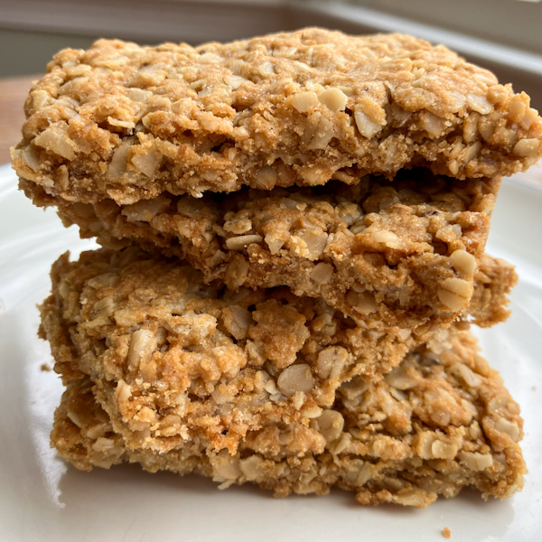

Home
Granola Bars

Description
These delicious crunchy oatmeal bars will be your new favorite snack! Lightly flavored with maple and brown sugar, they will satisfy your sweet and crunchy craving every time.
Ingredients
- oatmeal
- rice flour
- oil
- maple syrup
- brown sugar
- salt
- water
Steps
- Preheat oven to 300 degrees Fahrenheit. Line a 13x9 inch pan with parchment paper.
- Mix dry ingredients in bowl.
- Add wet ingredients and mix thoroughly. The mixture will be crumbly.
- Press into the pan with a spatula or your hand.
- Bake for 50 minutes.
- Remove from oven and immediately slice into bars.
- Let cool and enjoy.